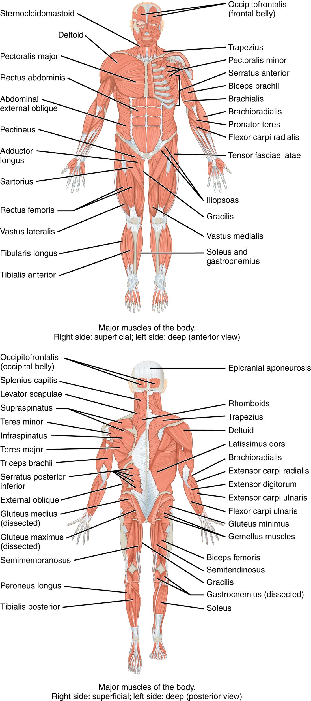
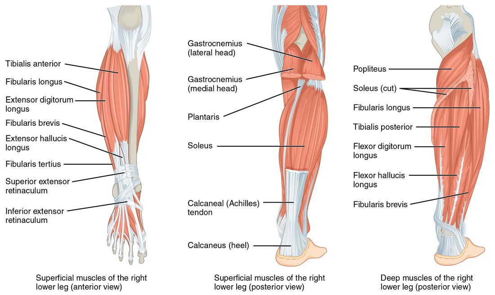

Your leg muscles carry your whole body weight with every step, so they are the largest and strongest in the body. This page covers the hip muscles and leg muscles you need to name and locate: the gluteal muscles, the muscles of the front, inner and back of the thigh, and the three groups of the lower leg, with the origin, insertion and action of each major one. It then groups the muscles of both limbs into their fascial compartments, explains compartment syndrome, and finishes with the three standard intramuscular injection sites.
How the lower limb is organized
Stand up from a chair. Your hips and knees both straighten, and your calves steady your ankles. The same chain rule you met in the upper limb applies here: a muscle moves the bone beyond the one it sits on.
- Muscles on the pelvis and lower spine move the femur at the hip.
- Muscles on the thigh move the leg at the knee (and several also cross the hip).
- Muscles on the leg move the foot at the ankle and the toes.
Unlike the arm, many thigh muscles cross two joints, the hip and the knee. That lets one muscle act at both, and it explains several injuries below. Use the whole-body views in Figure 1 to find each group before looking at the details.

Muscles that move the thigh: front of the hip
The iliopsoas is two muscles that share one tendon (see the top panel of Figure 2):
- The psoas major (psoa = loin) originates on the bodies and transverse processes of the lumbar vertebrae.
- The iliacus originates in the iliac fossa, the bowl on the inner face of the ilium.
They pass together in front of the hip joint and insert on the lesser trochanter of the femur. The iliopsoas is the prime mover of hip flexion: it lifts your knee toward your chest, as in climbing stairs. With the thigh fixed, it flexes the trunk forward at the hip, as in the second half of a sit-up.
![Muscles of the right hip and thigh in three views. The front view shows muscles from the lumbar spine and the bowl of the ilium passing in front of the hip, a four-part muscle mass over the front of the thigh joining one tendon around the kneecap, a long strap crossing the thigh diagonally, and muscles of the inner thigh. A deep front view shows the inner-thigh muscles fanning from the pubis to the back of the femur. The back view shows the cut buttock muscles, small muscles running from the sacrum to the top of the femur, and three muscles on the back of the thigh.](../figures/os-11-29.jpg)
Gluteal muscles
The gluteal muscles (glute- = buttock) cover the back and side of the hip. They form the gluteal group.
- Gluteus maximus: the largest and most superficial. It originates on the back of the ilium, the sacrum and the coccyx, and inserts on the femur just below the greater trochanter and into the iliotibial tract. It extends the thigh at the hip and rotates it laterally. It is the prime mover of hip extension and does its hardest work when you climb stairs, run or rise from a squat; in easy walking on level ground it does little.
- Gluteus medius: under and in front of the maximus, running from the outer surface of the ilium to the greater trochanter. It abducts the thigh and rotates it medially.
- Gluteus minimus: the smallest and deepest, under the medius, with the same attachments and actions.
- Tensor fasciae latae (tensor = tightener; fascia lata = broad band): a small muscle on the front of the hip, from the iliac crest near the anterior superior iliac spine into the iliotibial tract. It flexes and abducts the thigh and tightens the tract, steadying the knee.
The iliotibial tract is a thick band of the deep fascia that wraps the thigh. It runs down the outside of the thigh from the iliac crest to the lateral condyle of the tibia. Both the gluteus maximus and the tensor fasciae latae pull on it.
Why the gluteus medius matters in walking
Stand on your right leg. Your weight hangs to the left of the right hip joint and tends to make the left side of your pelvis drop. The right gluteus medius and minimus, pulling from the greater trochanter to the ilium, hold the pelvis level. Every step you take, the hip abductors of the standing leg do this. When they are weak, the pelvis drops toward the lifted leg on each step (a positive Trendelenburg sign), and the person sways the trunk over the standing leg to compensate.
Deep lateral rotators
Under the gluteus maximus, several small muscles run almost horizontally from the sacrum and pelvis to the greater trochanter. They rotate the thigh laterally and hold the head of the femur in the acetabulum, much as the rotator cuff does at the shoulder. The one to know is the piriformis (piri- = pear), from the front of the sacrum to the greater trochanter.
Anterior thigh muscles
The anterior thigh muscles are the quadriceps femoris and the sartorius, plus the lower end of the iliopsoas as it reaches the femur.
Quadriceps femoris
The quadriceps femoris (quadri- = four, -ceps = heads; femor- = thigh) is the large mass on the front of the thigh, the quadriceps femoris group of four muscles with one shared insertion:
- Rectus femoris: runs straight down the middle from the ilium just above the acetabulum (at the anterior inferior iliac spine, a smaller bump below the anterior superior iliac spine). It is the only one of the four that crosses the hip, so it flexes the hip as well as extending the knee. It is bipennate.
- Vastus lateralis (vastus = huge): on the outer side of the thigh, from the greater trochanter and the linea aspera.
- Vastus medialis: on the inner side, from the linea aspera. Its lowest fibers form the teardrop bulge above the inner knee.
- Vastus intermedius: deep, under the rectus femoris, from the front of the femur's shaft.
All four join the quadriceps tendon, which wraps the patella and continues below it as the patellar ligament to insert on the tibial tuberosity. Together they are the prime mover of knee extension: standing up, climbing, kicking. The patella sits inside the tendon as a sesamoid bone, lifting it away from the joint and lengthening its lever arm.
Sartorius
The sartorius (sartor = tailor) is the longest muscle in the body, a thin parallel strap. It runs diagonally across the front of the thigh from the anterior superior iliac spine to the medial surface of the upper tibia. It crosses both hip and knee: it flexes, abducts and laterally rotates the thigh and flexes the knee. Together those make the cross-legged sitting position once used by tailors.
The femoral triangle
At the top of the front of the thigh, three borders frame the femoral triangle: the inguinal ligament above, the sartorius on the lateral side and the adductor longus on the medial side. The thigh's main artery, vein and a large nerve pass through it just under the skin, which is why you can feel a strong pulse in the groin and why wounds there bleed heavily.
Medial thigh muscles
Squeeze a ball between your knees. The medial thigh muscles on the inner thigh are doing it (bottom left of Figure 2). All of them originate on the pubis (and the ischium for the largest one) and most insert along the linea aspera on the back of the femur. They adduct the thigh.
- Adductor longus: the most anterior, from the front of the pubis to the middle of the linea aspera. It forms the medial border of the femoral triangle.
- Adductor brevis: shorter, under the longus.
- Adductor magnus (magnus = large): the largest and deepest, from the pubis and the ischial tuberosity to the whole length of the linea aspera and a bump above the medial condyle. Its front part adducts; its back part, attached to the ischial tuberosity, also extends the hip like a hamstring.
- Gracilis (gracilis = slender): a long, thin strap from the lower pubis to the medial surface of the upper tibia. It adducts the thigh and flexes the knee.
- Pectineus: a short, flat muscle high in the groin, from the pubis to just below the lesser trochanter. It adducts and flexes the thigh.
A "groin pull" is a strain of these muscles, usually the adductor longus, from a sudden sideways push-off.
Hamstrings
The hamstrings, or hamstring group, are three muscles on the back of the thigh (bottom right of Figure 2). All three originate on the ischial tuberosity, the bone you sit on, and all three cross both hip and knee.
- Biceps femoris: the lateral one. Its long head comes from the ischial tuberosity; its short head from the linea aspera. It inserts on the head of the fibula.
- Semitendinosus (semi- = half; tendin- = tendon): medial, with a long cord-like tendon making up its lower half. It inserts on the medial surface of the upper tibia.
- Semimembranosus: medial and deep to the semitendinosus, with a flat, membrane-like upper tendon. It inserts on the back of the medial condyle of the tibia.
The hamstrings flex the knee and extend the hip. They are the prime movers of knee flexion, and they extend the hip in walking. Because they cross two joints, they are stretched most when the hip is flexed and the knee is straight at the same moment, as at the end of a sprinter's forward leg swing, which is when hamstring strains usually happen.
Behind the knee, the tendons of the hamstrings and the two heads of the calf muscle frame a diamond-shaped hollow, the popliteal fossa (poplit- = back of the knee). The biceps femoris tendon forms its upper lateral border and the semitendinosus and semimembranosus its upper medial border; the two heads of the gastrocnemius form its lower borders. The leg's main vessels and nerves pass through it.
| Quadriceps femoris | Hamstrings | |
|---|---|---|
| Position | Front of the thigh | Back of the thigh |
| Muscles | Rectus femoris, vastus lateralis, vastus medialis, vastus intermedius | Biceps femoris, semitendinosus, semimembranosus |
| Origin | Ilium (rectus femoris) and femur (the three vasti) | Ischial tuberosity (and linea aspera for the short head of the biceps femoris) |
| Insertion | Tibial tuberosity, through the quadriceps tendon, patella and patellar ligament | Head of the fibula and the medial tibia |
| Action at the knee | Extension (prime mover) | Flexion (prime movers) |
| Action at the hip | Rectus femoris flexes it | All three extend it (the short head of the biceps femoris does not cross the hip) |
Muscles of the leg
The muscles of the leg (below the knee) move the foot and toes. They fall into three groups, front, side and back, each with one main job at the ankle (Figure 3).

Front: dorsiflexors
- Tibialis anterior: runs down the front of the leg just lateral to the sharp edge of the tibia, from the lateral surface of the tibia to the medial cuneiform and the first metatarsal. It dorsiflexes the foot (lifts the toes toward the shin) and inverts it (turns the sole inward). It lifts the foot clear of the ground each time you swing a leg forward; when it is weak, the toes drag and the foot slaps down.
- Extensor digitorum longus: lateral to the tibialis anterior, from the tibia and fibula to toes 2 to 5. It extends the toes and dorsiflexes the foot.
Side: evertors
- Fibularis longus (fibula = pin; also called peroneus longus): from the head and upper fibula. Its tendon passes behind the lateral malleolus and then crosses under the sole to insert on the first metatarsal and medial cuneiform. It everts the foot (turns the sole outward), helps plantar flex it and supports the arches.
- Fibularis brevis: from the lower fibula, behind the lateral malleolus, to the base of the fifth metatarsal. It everts the foot. When you roll your ankle inward, these tendons are stretched, and the fibularis brevis can pull a piece of bone off the base of the fifth metatarsal.
Back: plantar flexors
- Gastrocnemius (gastr- = belly, kneme = leg; the "belly of the leg"): the two-headed bulge of the calf. Its heads originate on the medial and lateral condyles of the femur, so it crosses the knee as well as the ankle. It plantar flexes the foot (points the toes) and helps flex the knee.
- Soleus (solea = sole, flat fish): a broad flat muscle under the gastrocnemius, from the head of the fibula and the back of the tibia. It crosses only the ankle and plantar flexes the foot. It works almost constantly while you stand, keeping you from tipping forward over your ankles.
- Tibialis posterior: the deepest, from the back of the tibia, fibula and the interosseous membrane between them to the navicular and other tarsal bones. It plantar flexes and inverts the foot and holds up the medial arch.
The gastrocnemius and soleus share one tendon, the calcaneal tendon (also called the Achilles tendon), the thickest and strongest tendon in the body, which inserts on the calcaneus. A sudden push-off, as in a tennis lunge, can rupture it; the person cannot rise onto the toes of that foot, and squeezing the calf no longer points the foot.
| Front of the leg | Side of the leg | Back of the leg | |
|---|---|---|---|
| Main muscles | Tibialis anterior, extensor digitorum longus | Fibularis longus and brevis | Gastrocnemius, soleus, tibialis posterior |
| Main action at the ankle | Dorsiflexion | Eversion | Plantar flexion |
| Other actions | Tibialis anterior inverts; extensor digitorum longus extends toes 2–5 | Fibularis longus helps plantar flex and supports the arches | Gastrocnemius flexes the knee; tibialis posterior inverts |
| What weakness does | Toes drag when the leg swings forward | Ankle rolls inward easily | Cannot rise onto the toes |
Fascial compartments of the limbs
Wrap your hand around your upper arm and feel the muscles on the front and back. Between them runs a sheet of deep fascia you cannot feel, anchoring to the humerus. In each limb segment, the deep fascia wraps the whole limb like a sleeve, and inner sheets called intermuscular septa run from that sleeve to the bone. Together with the bone and, in the forearm and leg, the interosseous membrane, they divide the limb into closed spaces called fascial compartments.
The useful pattern: the muscles in one compartment usually share a main action and a nerve. Learn the compartments and you have learned the muscle groups.
| Limb segment | Compartments | Main muscles | Main action |
|---|---|---|---|
| Arm | Anterior compartment of the arm | Biceps brachii, brachialis, coracobrachialis | Flex the elbow |
| Posterior compartment of the arm | Triceps brachii | Extends the elbow | |
| Forearm | Anterior compartment of the forearm | Wrist and finger flexors, pronators | Flex the wrist and fingers; pronate |
| Posterior compartment of the forearm | Wrist and finger extensors, supinator | Extend the wrist and fingers; supinate | |
| Thigh | Anterior compartment of the thigh | Quadriceps femoris, sartorius | Extend the knee |
| Medial compartment of the thigh | Adductors, gracilis, pectineus | Adduct the thigh | |
| Posterior compartment of the thigh | Hamstrings | Flex the knee, extend the hip | |
| Leg | Anterior compartment of the leg | Tibialis anterior, extensor digitorum longus | Dorsiflex the foot |
| Lateral compartment of the leg | Fibularis longus and brevis | Evert the foot | |
| Posterior compartment of the leg | Gastrocnemius, soleus, tibialis posterior | Plantar flex the foot |
Compartment syndrome
Deep fascia is dense collagen: it barely stretches. That makes each compartment a space of nearly fixed volume, and it is the key to compartment syndrome. It follows a chain of causes:
- A fracture, a crush injury or a tight cast leads to bleeding or swelling inside one compartment.
- The fascia cannot stretch, so the pressure in the compartment rises.
- The rising pressure first squeezes the thin-walled veins shut, so blood cannot drain out. More fluid is trapped, and the pressure rises further.
- Soon the pressure also stops blood flowing through the capillaries. The muscles and nerves in the compartment are starved of oxygen.
- Muscle and nerve begin to die within hours unless the pressure is relieved.
The early warning sign is pain far worse than the injury seems to explain, and pain when the muscles of that compartment are passively stretched (for example, pointing the toes down stretches the front of the leg). Numbness and weakness come later. A pulse can often still be felt, because the pressure in the large artery is far higher than the pressure in the compartment. The treatment is surgery to slit the fascia open along the compartment. The anterior compartment of the leg, after a tibia fracture, is the most common site.
Intramuscular injection sites
An intramuscular injection places a drug or vaccine into a large muscle, where plentiful capillaries absorb it. The site has to be a thick muscle, with no large nerves or vessels nearby, found reliably from bony landmarks. The three standard intramuscular injection sites follow that logic.
- Deltoid site: the thickest part of the deltoid, about two to three finger widths (roughly 2.5 to 5 cm) below the acromion, on the side of the arm. It is easy to reach and is the usual site for vaccines in adults. The muscle is small, so it takes only small volumes, typically up to about 1 mL. Too low or too far back, a needle risks a nerve that winds around the back of the humerus; too high, it can enter the subacromial bursa and inflame the shoulder.
- Ventrogluteal site (ventro- = front; gluteal = buttock): the gluteus medius and minimus on the side of the hip. Place the heel of your hand on the patient's greater trochanter, your index finger on the anterior superior iliac spine and your middle finger spread back along the iliac crest. The needle goes into the center of the V between your two fingers. The muscle is thick, the landmarks are easy to find even in heavy patients, and there are no large nerves or vessels there. It is the preferred site for larger-volume injections in adults and children.
- Vastus lateralis site: the middle third of the vastus lateralis on the outer front of the thigh, between a hand's width below the greater trochanter and a hand's width above the knee. It is the preferred site for infants, whose gluteal muscles are still small, and is also used in adults.
The older dorsogluteal site, the upper outer part of the buttock over the gluteus maximus, is avoided when possible: the large nerve that runs out of the pelvis below the piriformis lies close by, and the fat layer is thick there, so the needle often fails to reach muscle.
Major lower limb muscles at a glance
| Muscle | Origin | Insertion | Main action |
|---|---|---|---|
| Iliopsoas (psoas major and iliacus) | Lumbar vertebrae; iliac fossa | Lesser trochanter | Flexes the hip (prime mover) |
| Gluteus maximus | Ilium, sacrum, coccyx | Femur below the greater trochanter; iliotibial tract | Extends the hip (prime mover); lateral rotation |
| Gluteus medius | Outer surface of the ilium | Greater trochanter | Abducts and medially rotates the thigh; holds the pelvis level |
| Quadriceps femoris | Ilium (rectus femoris); femur (vasti) | Tibial tuberosity via the patella and patellar ligament | Extends the knee (prime mover); rectus femoris flexes the hip |
| Sartorius | Anterior superior iliac spine | Medial surface of the upper tibia | Flexes, abducts and laterally rotates the thigh; flexes the knee |
| Adductor longus, brevis and magnus | Pubis (and ischial tuberosity for magnus) | Linea aspera | Adduct the thigh |
| Hamstrings | Ischial tuberosity | Head of the fibula; medial tibia | Flex the knee (prime movers); extend the hip |
| Tibialis anterior | Lateral surface of the tibia | Medial cuneiform, first metatarsal | Dorsiflexes and inverts the foot |
| Fibularis longus | Head and upper fibula | First metatarsal, medial cuneiform | Everts the foot |
| Gastrocnemius | Medial and lateral condyles of the femur | Calcaneus via the calcaneal tendon | Plantar flexes the foot; flexes the knee |
| Soleus | Head of the fibula, back of the tibia | Calcaneus via the calcaneal tendon | Plantar flexes the foot |
Summary
The iliopsoas (psoas major and iliacus) flexes the hip and the gluteus maximus extends it; the gluteus medius and minimus abduct the thigh and hold the pelvis level on the standing leg; the tensor fasciae latae and gluteus maximus pull on the iliotibial tract; the piriformis rotates the thigh laterally. The quadriceps femoris (rectus femoris and three vasti) extends the knee through the quadriceps tendon, patella and patellar ligament; the sartorius crosses the thigh diagonally; the femoral triangle lies between the inguinal ligament, sartorius and adductor longus. The adductors and gracilis adduct the thigh. The hamstrings (biceps femoris, semitendinosus, semimembranosus) flex the knee and extend the hip and frame the popliteal fossa above. In the leg, the front group dorsiflexes, the side group everts and the back group plantar flexes the foot, the gastrocnemius and soleus through the calcaneal (Achilles) tendon. Deep fascia divides each limb segment into compartments of muscles with a shared action; pressure trapped in one causes compartment syndrome. The deltoid, ventrogluteal and vastus lateralis sites are chosen for thick muscle, clear landmarks and no nearby large nerves.